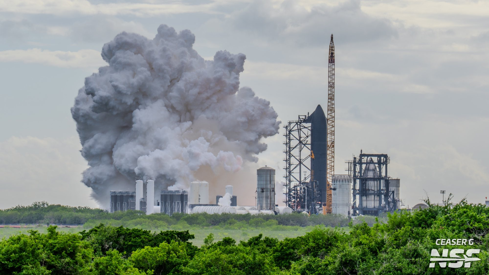
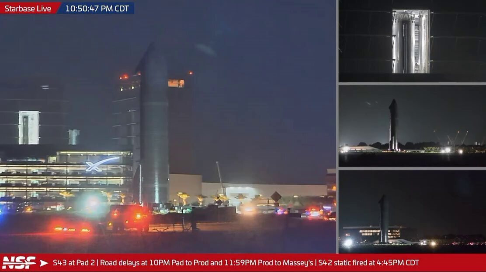
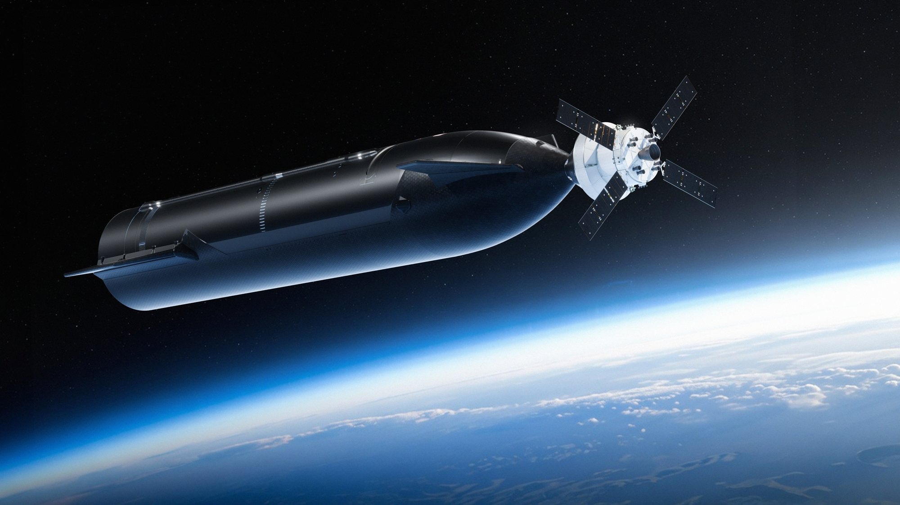

Alle 22:45 ora italiana di martedì 27 ottobre 2026, le 16:45 in Texas, i sei motori Raptor di Starship Ship 42 si sono accesi insieme sul banco di prova di Massey’s, a pochi chilometri da Starbase. Una colonna di vapore si è alzata sopra la palude e, dopo circa un minuto, i motori si sono spenti. Era l’ultima grande prova a terra che mancava a Flight 15: due giorni prima Booster 22 aveva acceso i suoi 33 Raptor sul Pad 2. Ora entrambi gli stadi del volo che dovrà tentare la prima doppia presa con la torre hanno superato il loro static fire.
Due accensioni in meno di un giorno
Ship 42 era arrivata a Massey’s nella notte fra domenica 25 e lunedì 26 ottobre, mentre Ship 43 lasciava lo stesso sito dopo le sue prove criogeniche. La prima accensione è arrivata in fretta: lunedì sera alle 21:17 ora del Texas, le 3:17 di martedì in Italia, la Ship ha acceso un solo motore. È una prova che SpaceX ripete spesso prima di un volo, perché riproduce la manovra con cui la Ship, una volta in orbita, riaccende un Raptor per frenare e cominciare la discesa verso l’atmosfera. Su Flight 15 quella manovra conta più del solito, perché dovrà portare la Ship sulla traiettoria giusta per tornare verso Starbase.
Meno di venti ore dopo, martedì pomeriggio in Texas, è stata la volta della prova completa. I tre Raptor ottimizzati per il livello del mare, al centro, e i tre per il vuoto, più grandi e disposti all’esterno, si sono accesi tutti, con la Ship ancorata al banco. Le immagini mostrano una fiammata pulita alla base del veicolo, poi la grande nube bianca dell’impianto ad acqua che ha coperto per qualche minuto il sito di prova. NASASpaceflight, che seguiva la prova con più telecamere, ha parlato di «sei Raptor 3 in salute per 60 secondi pieni», precisando che si trattava della sua valutazione.

Perché questa prova chiude il cerchio
Lo static fire è la cosa più vicina a un volo che si possa fare restando a terra. La Ship viene riempita di metano e ossigeno liquidi come per un lancio, i motori partono con la sequenza prevista e tutto, dalle turbopompe alle valvole, lavora alle condizioni reali. Se un Raptor si spegne prima del tempo o mostra un comportamento anomalo, lo si scopre qui, quando si può ancora sostituirlo.
Per Ship 42 il traguardo arriva dopo un percorso lungo. A settembre era stata sollevata dalle braccia della torre del Pad 2 in una prova di presa simulata, poi era tornata in fabbrica ed era ripassata da Massey’s per altre prove a freddo. Adesso le prove a terra dei due veicoli di Flight 15 sono complete, e in tempi stretti: 33 motori del booster domenica, un motore della Ship lunedì sera, sei motori martedì.
Il volo che li aspetta è il più ambizioso del programma. Nella teleconferenza sui conti del 20 ottobre Elon Musk ha confermato che SpaceX tenterà di riprendere con la torre sia il Super Heavy sia la Ship, e ha detto di ritenere il successo «più probabile che no». La presa del booster è già riuscita in passato. Quella della Ship, mai tentata, richiede che lo stadio superiore rientri dall’orbita, attraversi l’atmosfera e torni a Starbase con una precisione di pochi metri. La frenata in orbita provata lunedì sera con un solo motore è il primo anello di quella catena.

Intanto Flight 16 si muove: Ship 43 e Booster 23
A Starbase, però, non si lavora più su un volo alla volta. Lunedì 26 ottobre Ship 43, la Ship di Flight 16, è stata portata al Pad 2 e sollevata fino in cima alla torre, per una serie di prove con le braccia simili a quelle fatte da Ship 42 a settembre. Da lassù, hanno notato gli operatori di Starbase Live, ha avuto una vista privilegiata sull’accensione della sorella. Nella notte fra martedì e mercoledì è tornata al sito di produzione, dove dovrebbe ricevere i motori e completare l’assemblaggio.
Poche ore dopo, sulla stessa strada, è uscito Booster 23, diretto a Massey’s per una nuova prova criogenica. È stata una piccola sorpresa: il booster aveva già concluso le sue prove a freddo il 15 ottobre, e gli osservatori si aspettavano che il secondo trasferimento della notte servisse solo a portare un supporto. SpaceX non ha spiegato il motivo del nuovo passaggio. «SpaceX porta avanti due flussi in parallelo per Flight 15 e Flight 16», ha riassunto NASASpaceflight.
La coppia Booster 23 e Ship 43 dovrebbe partire via mare verso la Florida per il primo lancio di Starship dal complesso 39A del Kennedy Space Center. La Ship dovrà però completare tutte le prove in Texas, static fire compreso, perché in Florida non esiste ancora un banco per le Ship. Le stime fatte finora sui tempi di Ship 40, 41 e 42 collocano quel lancio fra dicembre e fine gennaio 2027.

Il fronte lunare: adattatore qualificato e Cabin 1
Lunedì sera, ora italiana, Starship è stata al centro anche di un panel dedicato ad Artemis III e alle missioni successive, moderato da Steve Creech, responsabile del programma Human Landing System al Marshall Space Flight Center della NASA. Jason Tenenbaum di SpaceX ha dato tre aggiornamenti. Il primo riguarda proprio la Florida: il 39A «è nella fase finale di allestimento», ha detto, e SpaceX punta a «essere pronta a lanciare quest’anno».
Il secondo è un traguardo tecnico: il sistema di aggancio che collegherà Starship e Orion in orbita è stato qualificato, e l’esemplare usato per la qualifica arriverà al Marshall questa settimana. È un adattatore derivato da quello di Crew Dragon, capace di funzionare sia come lato attivo sia come lato passivo, e servirà già ad Artemis III, la missione in orbita terrestre in cui Orion proverà ad agganciarsi ai lander di SpaceX e Blue Origin.
Il terzo riguarda Cabin 1, la cabina dell’equipaggio a grandezza naturale in costruzione nella Starfactory di Starbase. In questi giorni viene posato il pavimento e SpaceX conta di completarla «nel giro di un mese o due». «La useremo per prove con l’equipaggio a bordo, con astronauti NASA e soggetti di prova, per avere riscontri sul progetto mentre ci prepariamo a costruire il veicolo di volo per Artemis IV», ha spiegato Tenenbaum. Lo stesso giorno la NASA ha annunciato l’aggiornamento dei contratti con i due fornitori di lander: SpaceX aggiunge due dimostrazioni di Cabin 1, Blue Origin nuove prove con persone a bordo. «L’aggiornamento dei contratti garantisce che la NASA e i suoi partner siano allineati su requisiti e traguardi», ha detto Jeremy Parsons, responsabile del programma Artemis.
| Data (ora italiana) | Veicolo | Che cosa succede |
|---|---|---|
| 15 ottobre | Booster 23 | Fine della prima campagna di prove criogeniche |
| 23-24 ottobre | Ship 43 | Prove criogeniche a Massey’s |
| 25 ottobre, 14:22 | Booster 22 | Static fire di durata piena con 33 motori, confermato da SpaceX |
| 26 ottobre | Ship 42, Ship 43 | Ship 42 arriva a Massey’s; Ship 43 sollevata in cima alla torre del Pad 2 |
| 27 ottobre, 3:17 | Ship 42 | Static fire con un solo motore |
| 27 ottobre, 22:45 | Ship 42 | Static fire con sei motori, circa 60 secondi (stima) |
| 28 ottobre, notte | Ship 43, Booster 23 | Ship 43 torna in fabbrica; Booster 23 verso Massey’s per nuove prove a freddo |
| novembre | Flight 15 | Lancio atteso con tentativo di doppia presa; data e licenza FAA non annunciate |
| dicembre-gennaio? | Flight 16 | Primo lancio dal 39A; nessuna data ufficiale |
Che cosa aspettarsi adesso
Con le prove dei motori alle spalle, Ship 42 dovrebbe tornare nella Mega Bay 2 per le ultime ispezioni e i preparativi al volo, mentre Booster 22 è già rientrato nella Mega Bay 1. Restano due condizioni fuori dal controllo dei tecnici di Starbase: la licenza della FAA, che per la prima volta dovrà autorizzare il rientro della Ship verso la costa del Texas, e la scelta della data. Nelle settimane scorse i piani interni indicavano come prima possibilità l’8 novembre, Musk ha parlato di un lancio prima del Ringraziamento, il 26 novembre. Nessuna delle due è una finestra ufficiale.
Non tutto, a margine, è filato liscio. Le telecamere di NASASpaceflight al sito di prova dei motori di McGregor, in Texas, hanno ripreso nello stesso periodo lo scoppio di un serbatoio composito ad alta pressione, seguito da un incendio e dall’arrivo dei vigili del fuoco. SpaceX non ha diffuso informazioni su cause o danni, e nulla indica un legame con i veicoli di Flight 15.
Il dossier del 26 ottobre sullo static fire di Booster 22 passa all’archivio Notizie: questa pagina mette in primo piano le prove di Ship 42 e la coppia di Flight 16 che le segue a poche settimane.
Fonti pubbliche e tracce
Ultimo aggiornamento editoriale: 28 ottobre 2026. Nel corpo non si ripete la fonte a ogni frase: le tracce sono raccolte qui. Gli orari sono convertiti in ora italiana (UTC+1; in Texas vale ancora l’ora legale, UTC-5).
- NASASpaceflight su X, 27 ottobre 2026, 21:46 UTC: «Starship Flight 15: Ship 42 conducts a six-engine static fire test», con video; nella diretta Starbase Live l’orario indicato è 4:45 PM CDT.
- NASASpaceflight su X, 27 ottobre 2026, 23:59 UTC: Ship 42 ha completato gli static fire con uno e con sei motori, «paving the way for Flight 15 in November»; video riepilogativo con le due accensioni, i movimenti di Ship 43 e Booster 22 e l’incidente al COPV di McGregor.
- NASASpaceflight su YouTube, 27 ottobre 2026: static fire di Ship 42 con sei motori e 60 secondi a Massey’s; post NSF «six healthy Raptor 3 engines for a full 60 seconds», presentato come stima.
- Ceaser G su X, 27 ottobre 2026 e Colleen Lustine su X, 27 ottobre 2026: foto dello static fire a sei motori, rilanciate da NASASpaceflight.
- Next Spaceflight, scheda Ship 42: static fire con un motore (manovra di frenata simulata) e con sei motori per circa 60 secondi.
- Starlust, ottobre 2026: static fire a un motore di Ship 42 alle 21:17 CDT del 26 ottobre, Ship 43 sollevata dalla torre del Pad 2.
- NASASpaceflight su X, 28 ottobre 2026, 04:24 UTC: Ship 43 rientra al sito di produzione dopo le prove al Pad 2, Booster 23 verso Massey’s per prove criogeniche; la coppia dovrebbe essere la prima a volare dal 39A.
- NASASpaceflight su X, 28 ottobre 2026, 04:59 UTC: «SpaceX is running two flows in parallel for Flights 15 and 16»; Ellen Fraser (efraser77) su X sul trasferimento inatteso di Booster 23.
- NASASpaceflight, 25 ottobre 2026: Flight 16 dal LC-39A, Booster 23 e Ship 43 e stime sui tempi.
- Spaceflight Now su X, 26 ottobre 2026, filo dal panel su Artemis III: interventi di Steve Creech e Jason Tenenbaum su 39A, adattatore di aggancio e Cabin 1.
- NASA, 26 ottobre 2026: aggiornamento dei contratti dei lander, due dimostrazioni di Cabin 1 per SpaceX, dichiarazione di Jeremy Parsons.
- SpaceX, pagina aggiornamenti: qualifica dell’adattatore di aggancio derivato da Dragon 2, attivo o passivo.
- iXBT, 27 ottobre 2026: scoppio di un COPV e incendio a McGregor, dalle riprese McGregor Live di NSF.
- Eric Berger su X, 20 ottobre 2026: Musk annuncia il tentativo di recupero di booster e Ship su Flight 15, successo «more likely than not».
Fotografie utilizzabili
Non esistono ancora foto a licenza libera degli static fire di Ship 42. La copertina e la foto della nube sono scatti dei fotografi di NASASpaceflight pubblicati su X; Ship 43 è un fotogramma della diretta Starbase Live. Sono usate con credito e dicitura «uso editoriale non commerciale». L’illustrazione di Starship e Orion è un’immagine NASA/SpaceX di pubblico dominio. Dettagli in scheda dei crediti fotografici.
Apri il dossier archiviato sullo static fire di Booster 22 · Il briefing Artemis del 24 ottobre · Archivio Notizie · Torna a SpaceX